Try to control your 'bestial desires' as we visit
CHOCCY'S MURDER MYSTERY
Evening!
(9th February 2002)


|
|
Try to control your 'bestial desires' as we visit CHOCCY'S MURDER MYSTERY Evening! (9th February 2002) |
| The hosts for the evening are Camilla Hurley-Burley... | 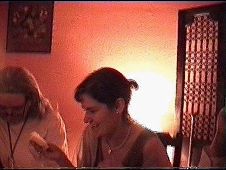 |
|
|
...and her husband, Colonel Hurley Burley, a war veteran. |
| The occasion? The birthday of their daughter Elizabeth. | |
|
Notable guests include political activist Jasvinda Loo... |
| The Turkish Scarlet Lady with a suspicious past, Mata Harem... | 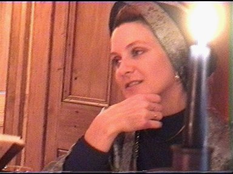 |
|
...International businessman and dodgy South-African, Fritz Metz... |
| ...the all-knowing and trustworthy holy man, Sage Aloo.... | 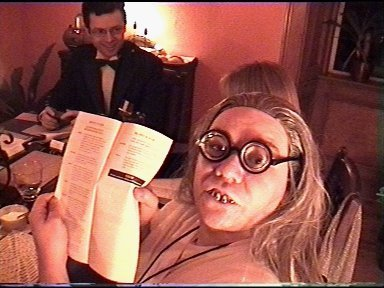 |
|
...and International Indian playboy, Imran Khant. |
| The partygoers react with shock when realising the final guest, Charles Chance, has been MURDERED! | |
|
Ladies man Imran capitalises on Mata Harems shocked and vulnerable state. |
| Elizabeth tries to contain her grief.... | |
| 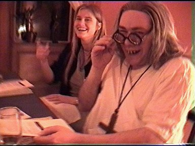 | ...and seeks spiritual guidance from the Sage... |
| ...but feels somehow unfulfilled. | 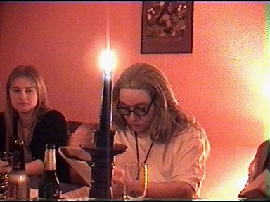 |
|
Mata confides her suspicions to Fritz Metz, interrupting his excellent Posh Spice joke. |
| The Colonel debates the facts of the case with Jasvinda... | 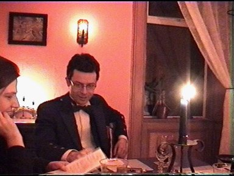 |
| 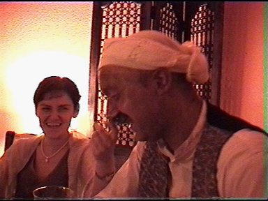 | ...while Camilla discovers Imran's secret... |
| ...that moustache is a FAKE! | 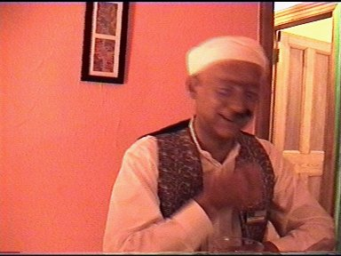 |
| 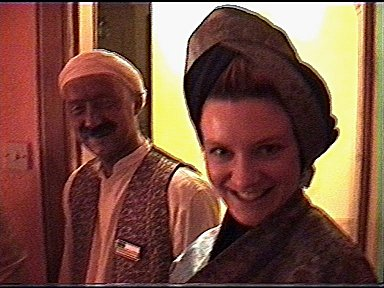 | Mata assures everyone that she has no fake attachments. |
| Imran sweats under heavy questioning... | |
| 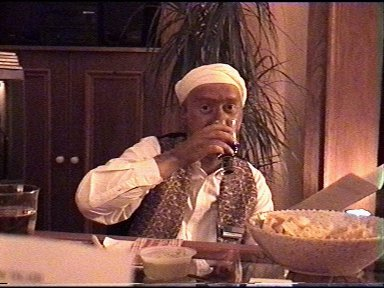 | ...but maintains his cool. |
| The murderer is revealed, and Camilla breaks down in shock! | 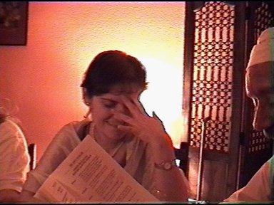 |
|
Everyone is relieved! And after a good nights sleep, depart the next morning... |
| Pale with shock, Imran is glad to see the back of them. | |
|